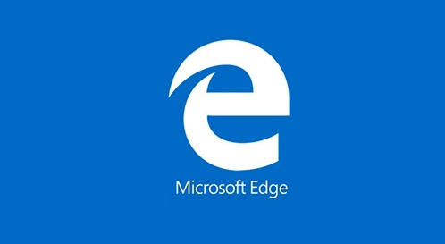
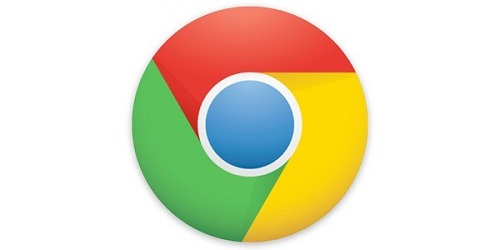

Browsers are basically software programs that allow you to search for and view various kinds of information on the Web, such as web sites, video, audio, etc.
Here are most popular Web browsers available for free download:
 Microsoft Edge is a web browser developed by Microsoft and included in the company's Windows 10 operating systems, replacing Internet Explorer as the default web browser on all device classes. According to its developer Microsoft, Edge is designed to be a lightweight web browser with a layout engine built around web standards.
 Google Chrome is a freeware web browser developed by Google. It used the WebKit layout engine until version 27 and, with the exception of its iOS releases, from version 28 and beyond uses the WebKit fork Blink, It was first released as a beta version for Microsoft Windows on September 2, 2008, and as a stable public release on December 11, 2008. As of December 2015, StatCounter estimates that Google Chrome has a 58% worldwide usage share of web browsers as a desktop browser.It is also the most popular browser for smartphones, and combined across all platforms at about 45%. Its success has led to Google expanding the 'Chrome' brand name on various other products such as the Chromecast
Mozilla Firefox (known simply as Firefox) is a free and open-source.web browser developed by the Mozilla Foundation and its subsidiary, the Mozilla Corporation. Firefox is available for Windows, OS X and Linux operating systems, with its mobile versions available for Android, and Firefox OS; where all of these versions use the Gecko layout engine to render web pages, which implements current and anticipated web standards.
Mac Safari is a web browser developed by Apple based on the WebKit engine. First released in 2003 with Mac OS X Panther, a mobile version has been included in iOS devices since the introduction of the iPhone in 2007. It is the default browser on Apple devices.